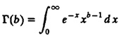
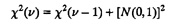
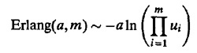
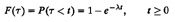
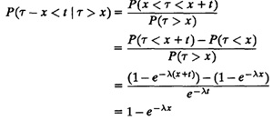
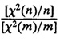
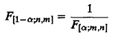
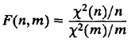
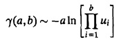
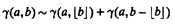

| Previous | Table of Contents | Next |
The sum of squares of several unit normal variates has a distribution known as chi square. The distribution was first derived by Karl Pearson in 1900. In his original paper, Pearson used the symbol X2 for the sum. Since then statisticians have started referring to the distribution as the chi-square distribution. The key characteristics are summarized in Table 29.4.
The chi-square distribution is used whenever a sum of squares of normal variables is involved, for example, to model sample variances.
Chi-square variates can be generated as follows:
TABLE 29.4 Chi-Square Distribution X2(v)

v even,
For v odd,

The Erlang distribution is commonly used in queueing models as an extension of the exponential distribution. The key characteristics of the Erlang distribution are summarized in Table 29.5.
The Erlang distribution is used as an extension to the exponential distribution if the coefficient of variation is less than 1, for example,
TABLE 29.5 Erlang Distribution Erlang(a,m)
Erlang variates can be generated using convolution as follows. Generate m U(0, 1) random numbers ui, and then

The exponential distribution is used extensively in queueing models. The key characteristics of the distribution are summarized in Table 29.6.
TABLE 29.6 Exponential Distribution exp(a)
The exponential distribution is the only continuous distribution with the memoryless property such that remembering the time since the last event does not help in predicting the time till the next event. If the interarrival times of jobs to a system are exponentially distributed, for instance, with mean 1/λ, the probability distribution function is

If we see an arrival and start our clock at t = 0, the mean time to the next arrival is 1/λ. Now suppose we do not see an arrival until t = x. The distribution of the time remaining until the next arrival is

This is identical to the situation at t = 0. In particular, the mean time to the next arrival is still 1/λ. Thus, the expected time to the next arrival is always 1/λ regardless of the time since the last arrival. Remembering the past history does not help. A similar argument applies to any other exponential variate. This memoryless property, which considerably simplifies the analysis, is the main reason for the popularty of the exponential distribution.
The exponential distribution is used to model the time between successive events, particularly if the events are caused by a large number of independent factors, for example,
The service times at devices are also modeled as exponentially distributed.
Exponential variates can be generate using inverse transformation. Generate a U(0,1) random number u and return – aln(u) as exp(a). This is based on the inverse transformation method.
The ratio of two chi-square variates has an F distribution. The key characteristics of the F distribution are summarized in Table 29.7. Notice that the two parameters n and m of the F distribution are called numerator degrees of freedom and denominator degrees of freedom. The names of the parameters come from the fact that if we take two chi-square variates, X2(n) and X2(m) with n and m degrees of freedom, then the ratio

has an F(n,m) distribution.
TABLE 29.7 F Distribution F(n,m)
 provided m>2
provided m>2
The quantiles of the F distribution are listed in Tables A.6 to A.8 in the Appendix. These tables list only F1 values for a close to 1. From these values F1 – α can be computed using the following relationship:

For example, this relationship can be used to compute F0.05 from the F0.95 table.
The F distribution is used to model the ratio of sample variances, for example, in the F-test for regression and analysis of variance.
Using characterization, F-variates can be generated as follows. Generate two chi-square variates X2(n) and X2(m) and compute:

The Gamma distribution is a generalization of the Erlang distribution and allows noninteger shape parameters. Like exponential and Erlang distributions, it is used in queueing modeling. The key characteristics of the gamma distribution are summarized in Table 29.8.
TABLE 29.8 Gamma Distribution γ(a,b)
The gamma distribution is used to model service times of devices in queueing network models and for repair times in a manner similar to the Erlang distribution (See Section 29.5).
Gamma variates can be generated as follows:


| Previous | Table of Contents | Next |